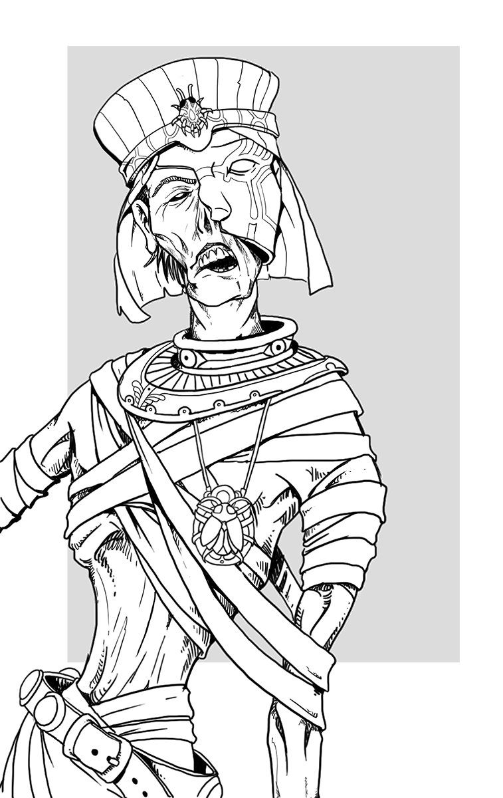

Complete Monster
by
Radaghast Kary
← Mule
↑Index↑
Mummy Dedicated Hero →

Illustration by Mariana Ruiz Villarreal,
Public Domain
Mummy
Members:
Ancient Ziggurat Mummy
Centaur Mummy
Giant Mummy
Imy-Ut Ushabti
Mummy Guardian
Mummy Lord
Mummy Pharaoh
Necrosphinx
Scourge of Baphomet
Venomous Mummy
5e
LE
D&D 5 facts
Size: Medium
Type:
Undead
CR: 3
D&D 5 sources
Monster Manual
, p. 228
D&D 5 links
Mummy in 5e d20 SRD
Mummy on AideD&D
3e
LE
D&D 3.0 facts
Abilities: Str 17, Dex 8, Con -, Int 6, Wis 14, Cha 15
AC: 17 (-1 Dex, +8 natural)
Advancement: 7-12 HD (Medium-size); 13-18 HD (Large)
Attacks: Slam +6 melee
CR: 3
Damage: Slam 1d6+4 and mummy rot
HD: 6d12+3 (42)
Initiative: -1 (Dex)
Organization: Solitary, wardens (2-4), or guardians (6-10)
Qualities: Undead, resistant to blows, damage reduction5/+1, fire vulnerability
Reach: 5 ft. by 5 ft./5 ft.
Saves: Fort +2, Ref +1, Will +7
Size: Medium
Skills: Hide +8, Listen +9 Move Silently +8, Spot +9
Speed: 20 ft.
Terrain: Any desert and underground
Treasure: Standard
Type:
Undead
D&D 3.0 links
Mummy in 3.0 d20 SRD
D&D 3.5 links
Mummy in 3.5e d20 SRD
Pathfinder 2 sources
Bestiary
Pathfinder 2 links
Mummy Creature Family in Pathfinder 2 SRD
LE
d20 Modern facts
Size: Medium
Type: undead
CR: 4
HD: 6d12 plus 3 (Toughness feat)
HP: 42
Massive Damage Threshold: —
Initiative: 1
Speed: 20 ft.
Defense: 17, touch 9, flat-footed 17 (-1 Dex, +8 natural)
BAB: +3
Grapple: +6
Attack: +6 melee (1d6+4 plus mummy rot, slam)
Full Attack: +6 melee (1d6+4 plus mummy rot, slam), or +2 ranged
Fighting Space: 5 ft. by 5 ft.
Reach: 5 ft.
Special Qualities: undead, despair, mummy rot, fire vulnerability, resistant to blows, damage reduction 5/+1, darkvision 60 ft.
Saves: Fort +2, Ref +1, Will +7
Action Points: 0
Reputation: +0
Abilities: Str 17, Dex 8, Con -, Int 6, Wis 14, Cha 15
d20 Modern sources
d20 Modern
d20 Modern links
Mummy on DM Reference
1e
First BD&D
sources
Basic Set (Holmes)
, p. 30
LE
BLUEHOLME facts
BLUEHOLME sources
BLUEHOLME Journeymanne Rules
BLUEHOLME Prentice Rules
, p. 39
BLUEHOLME links
Mummy Dreamscape Design
BLUEHACK sources
BLUEHACK
, p. 21
0e
OD&D facts
Number Appearing: 1-12
AC: 3
Move: 6
HD: 5+1
Chance in Lair: 30%
Treasure: Type D
OD&D sources
Monsters & Treasure
, p. 3
C
S&W
facts
AC: [16]
Attacks: touch (1d6+special)
HD: 6+4
HDE: : 7
Move: 2
Special: Rot, hit only by magic weapons
XP: 600
S&W
sources
The Blue Book of Dangers and Dweomers
, p. 92
{kind=link}